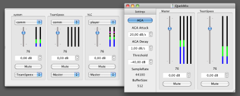
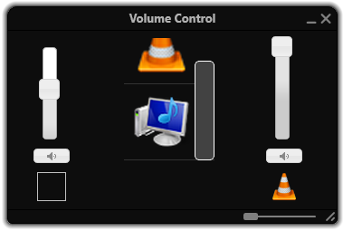

coding
An overview over my projects
coding
CrossTalk
CrossTalk is a Teamspeak 3 plugin that enhances the general audio experience and provides advanced features for commanders.
Written in C++, excessively using Qt, cross plattform
Features:
- Positional Audio: Hear players from the direction their avatar is in supported games.
- Stereo Position Spread: When multiple people are talking at the same time, which tends to happen, they are harder to understand than necessary. First, our brain is a lot better at decyphering those noises into language if they are located at seperate positions. Second, when two or more people are talking, the client mixer will possibly not have the headroom to keep things from distorting/generating artifacts. This module shall help on both of these issues. In advanced mode, you can reserve specific regions for certain types of incoming audio streams: Have whispers on the right, secondary tabs on the left, current in the middle (if conflicting, they'll also be spread inside their regions).
- Channel Ducking: Reduces the volume of speakers in the channel of a server tab as soon as a whisper comes in or someone talks on another server tab (in common scenarios this is some kind of commander channel).
- Global (MusicBot) Ducking: Set a client as global ducking target. When anyone else talks, this client will be ducked.
- Cross-Server Push-to-Talk & Whispering: This is implemented using Plugin Commands and Hotkeys
- Channel Muter: Temporarily mute a channel except the clients you whitelisted.
- Radio FX: Walkie Talkie? Walkie Talkie.
QjackMix
QjackMix provides an application mixer and communication center for OSX and Linux.
Written in C++ utilizing Jack Audio and Qt.
Features:
- User configurable ducking of music applications on communication activity
- Multichannel-aware
- Remote controllable via OpenSoundControl
OSCMix
Remote controlling the application volume mixer of Windows 7 upwards
Windows service written in C#
Example Client: Overwolf widget providing a minimalistic ui in games (unreleased, closed source)
history:
MicroKontrolsnippets waiting to be catalogized
An overview over my lua addons for games can be found on my curseforge developer profile